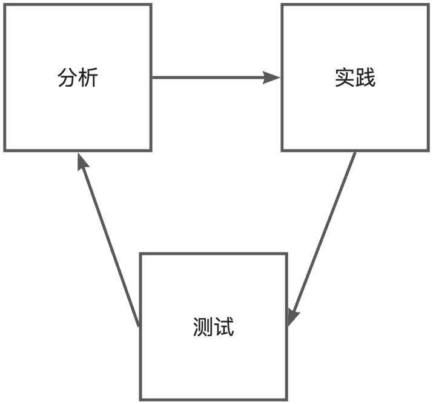
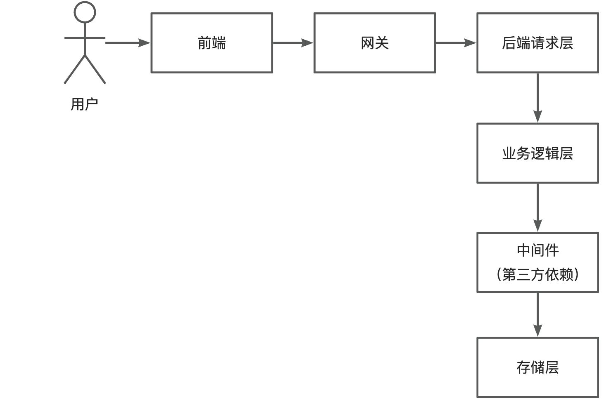
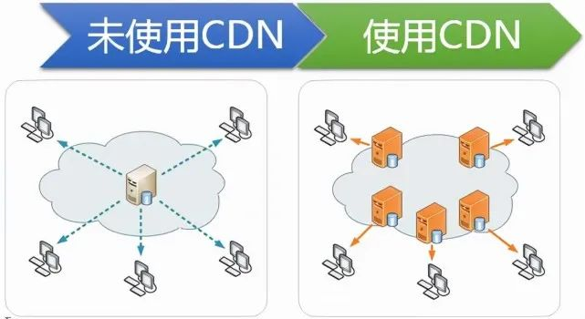

性能优化 01 - 通用方法论
性能优化是指通过持续的分析、实践和测试，确保系统稳定高效运行，从而满足用户诉求。其闭环流程如下：

性能优化分类
性能优化可分为两大类：
1）通用优化
经典的、对绝大多数情况都适用的优化策略，如增大服务器并发请求处理数、使用缓存减少数据库查询、负载均衡分摊请求、同步转异步等。
2）对症下药
结合具体业务特性和系统现状，先通过性能监控工具、压力测试等手段分析出性能瓶颈，再针对性地选取策略。例如数据库慢查询（单次查询超过 1 秒），根据查询条件给对应字段增加索引即可提高性能。
实际开发中这两类策略通常并用。系统设计和开发阶段应本能地引入性能优化手段，降低后续出问题的概率。性能优化是持续的过程，随着需求、用户和系统用量增长，原本符合要求的系统也会出现新问题。
对于复杂、高可用性要求的项目，可提前通过压力测试模拟大用户量场景，预先做好优化。
通用性能优化手段
以请求的完整生命周期为主线，依次介绍各节点的优化方法。

1）前端优化
- 离线缓存：利用浏览器缓存机制，已请求的资源无需重复请求，提高页面加载速度。
- 请求合并：页面请求过多时，将多个小请求合并成一个大请求，减少网络开销。
- 懒加载：延迟加载页面图片等元素，提高首屏加载速度。
2）网关优化
- 负载均衡：根据路由算法将请求转发到对应的后端系统，实现多服务器分摊请求，增大并发量。
- 缓存：缓存后端返回的数据，下次前端请求时直接从网关获取，减少后端调用。
3）后端请求层
- 服务器优化：根据业务特性选择性能更高的服务器并调整参数，如 Nginx、Undertow 等。
- 微服务：将大型服务拆分为小型服务，通过微服务网关转发，增大各服务的并发处理能力。
4）业务逻辑层
- 异步化：将同步业务逻辑改为异步，尽早响应，提高并发处理能力。
- 多线程：将复杂操作拆分成多个任务，通过多线程并发执行，提高处理效率。
5）中间件（第三方依赖）
- 缓存：将数据库查询结果缓存到性能更高的服务（如基于内存的 Redis 或本地缓存），减少数据库压力，提高查询性能。
- 队列：使用消息队列对系统解耦或将操作异步化，实现流量的削峰填谷。
6）存储层
- 分库分表：数据量极大时，对数据库进行垂直或水平切分，提高并发处理能力。
- 数据清理：定期清理无用或过期数据，减少存储压力，必要时进行备份转储。
实战案例：CDN + HTTP/2 网站加速
案例：静态资源站首屏加载从 5s 优化到 1.5s（CDN 5s→3s，HTTP/2 3s→1.5s），几分钟配置完成。
CDN（内容分发网络）
原理： 将源服务器文件分发到多个地域的网络节点，用户访问时从最近的节点获取；节点无缓存时自动从源站拉取（回源）。

解决单服务器部署的 3 个缺点：
- 单服务器压力过大
- 单点故障（服务器宕机全站无法访问）
- 离服务器越远的用户访问越慢
配置要点（以云厂商 CDN 为例）：
- CDN 域名：二级域名 +
cdn/static前缀，如cdn.example.com - 回源地址 + 回源 HOST：CDN 无缓存时从回源地址拉取源文件；回源 HOST 用于告诉源站请求方身份、返回正确资源
- 访问控制（防盗链）：只允许自己域名的网页请求文件，防止文件被其他网站盗用刷流量
- IP 访问频率限制：防单个 IP 攻击、限制流量（DDoS 防不住但聊胜于无）
- 缓存时间：不变化的静态文件缓存设长；动态页面不要缓存，否则用户看到的都是旧内容
- 文件随机后缀：更新静态文件时生成随机后缀，防止 CDN 缓存未刷新导致用户看不到最新页面（现代前端框架 + 打包工具如 UMI + Webpack 会自动生成）
成本与选型： 按流量计费。前期用户少、或用户都在服务器同机房时没必要上 CDN。
衍生能力：
- DCDN：全站加速，通过路由优化加速动态内容，可给实时性要求高的接口加速
- SCDN：安全加速，给 CDN 加一层防护，应对 DDoS、CC 攻击
HTTP/2
在云厂商 CDN/加速配置页直接开启 HTTP/2 开关即可显著降低延迟（协议原理见 网络 08 - HTTP2与HTTP3及WebSocket）。
实战案例：后端查询接口性能优化（缓存 + 序列化 + 容器调优）
案例：主页分页查询接口（纯数据库分页查询），插入 10 万条数据后逐层压测调优，响应时长 700ms → 8ms，QPS 20 → 19000（近千倍）。
优化前基线
浏览器控制台观察 10 次请求平均 700ms；JMeter 压测（每秒启动 1000 线程、共 1 万请求、异常率 0%）QPS 仅 20。
逐层优化过程
| 步骤 | 手段 | 效果 |
|---|---|---|
| 1. SQL 精简 | 只查询需要返回前端的字段，减少数据量 | 平均 500ms 左右（缩短约 1/4） |
| 2. Redis 分布式缓存 | 分页查询结果序列化为 JSON 写入缓存，命中直接读 | 平均 20ms（缩短 25 倍）；QPS 114.6（提升 5 倍多） |
| 3. 本地缓存 | 改为从当前服务器内存直接读取 | 浏览器测试几乎无变化（Redis 也在本机）；QPS 仅提升约 10% |
| 4. 换缓存数据类型 | 不再存 JSON，用 JDK 原生序列化保存对象，读取时省去 JSON → 对象转换（省 CPU） | 平均 8ms；吞吐量接近 16000（提升 100 多倍） |
| 5. Tomcat 容器调优 | 增大工作线程数和最大连接数（请求层优化） | 吞吐量提升约 1/5，接近 19000，对比初始 QPS 20 提升近千倍 |
| 6. 空接口测天花板 | 写无业务逻辑、直接返回 “ok” 的空接口压测 | QPS 36000+——即 Tomcat + Spring MVC 框架的理论上限，业务接口无论怎么优化都超不过它 |
要点提炼
- 缓存适用数据：读多写少、更新频率低、访问频率高的数据非常适合加缓存
- I/O 优化完，还有 CPU 和请求层：看似不起眼的 JSON → 对象转换也极耗性能（步骤 4 提升 100 多倍）；业务层优化完后仍可调容器（线程数/连接数）
- 用空接口找上限：想知道业务接口还有多少优化空间，就写一个无业务逻辑的接口压测，得到当前技术栈的天花板，避免做无用功
- 换技术栈是终极手段：达到 Tomcat + Spring MVC 上限后，可考虑更高性能的框架（如响应式 WebFlux 等）
- 性能数据无标准答案：「一台 Tomcat 每秒最多处理多少请求？」本身无解——缺少测试条件、环境与基准（几核几 G、多大带宽）。优化效果必须以实际压测结果为准
面试与答辩：如何回答「项目性能优化」类问题
场景：面试官追问「你项目第一的瓶颈是什么？你会怎么优化它？」
先立前提：脱离具体业务场景和线上实际运行情况的性能优化讨论没有意义——不同场景、不同规模的项目，瓶颈和手段都不一样。回答这类问题时应先讲清这一点，再结合自己的项目展开。
再按「实际情况 → 解决方案」分点作答（以 AI 应用类项目为例）：
| 瓶颈（线上实际表现） | 优化方案 |
|---|---|
| AI 接口 QPS 有限，运行时出现调用超限报错 | 单个接口 QPS 有限，就多接几个 AI 接口，用负载均衡（轮询调用）叠加整个系统的 QPS；成本有限时用限流保障稳定性 |
| AI 单次可处理数据量有限，用户输入过多直接报错 | 压缩用户输入数据（如合并同类数据）以处理更多行列；压缩效果差就优化算法，压缩效率低就用文件分片 + 多线程并发压缩 |
| 单用户图表数增多后前端查询越来越慢（等 8 秒才出图） | 引入缓存，改为从更快的内存 / 本地缓存查询，缩短查询时长 |
| AI 响应时间长，用户要等很久 | 同步改异步：先立刻返回「提交成功」，用户可选等待、等执行完通知，或主动到任务管理页查进度——既提升体验又支撑更多用户并发 |
表达技巧：做性能优化时多拿生活场景类比——一家店供不应求，可以限时发售（限流）、限制流量，也可以加一个排队机制让用户按顺序等待、依次执行。
别把优化局限在性能：项目优化还包括可用性、稳定性、可观测性、成本等维度。例如随着用户图表数据量增大，后端存储成本升高，就需要用数据压缩、数据沉降、数据清理等机制降低存储成本。
实战案例：后端接口优化的 5 种手段（工作记录）
案例：抽出几小时优化几个后端接口，平均响应时间缩短 2 ~ 4 倍。
- 减少重复的数据库查询：接口处理链中若方法 A 已查出某条数据（如用户 1），方法 B 就不要再查一遍——把已查出的对象作为参数传给方法 B，或用
ThreadLocal临时缓存本次请求内的数据。 - 并发处理：两个各耗时 3 秒的数据库查询，同步执行需 6 秒，并发执行后 3 秒完成。⚠️ 但并发不是「无脑加」——某次优化中，对单用户下的大数据量子资源单纯并发查询，导致线程池任务队列爆满、连锁引发接口超时；改为批量并发（控制批量粒度，靠线上数据 + 大量实验确定）后接口性能提升 3 倍、请求耗时分布更平稳。优化效果要靠实验和测试验证，别只凭经验值或理论下判断。
- 非核心操作异步化：接口结束前写一条操作记录等非核心步骤，可开子线程异步执行（或用消息队列等中间件），不必等它结束即可响应。
- 减少数据量：返回前端、缓存读写的数据一般越小越好。实测把缓存的序列化由 JDK 原生库换成开源高性能序列化库 Kryo 后，同样数据量占用从约 5 MB 降到 2 MB 多（压缩一倍多），读写耗时从约 700 ms 降到 200 多 ms。⚠️ 更换序列化库后要清掉缓存里的旧数据，否则键值格式冲突。
- 合并查询：要查 id 为 1、2、3 的用户时，直接合并为批量查询
where id in (1, 2, 3)，避免查询耗时随 id 数线性增长，减少数据库请求次数与全表扫描；前端同理可合并请求。
与上文「通用性能优化手段」互补：第 2、3 条分别对应业务逻辑层的「多线程」与「异步化」（中间件「队列」）；本案例的增量在代码级消除重复查询、Kryo 序列化库、批量合并查询三类具体手段。
优化原则
并非每种方法都要用、每种方法都有用。做性能优化时需注意：
- 权衡性价比：根据实际情况，评估优化收益与系统改动风险。
- 避免盲目引入新技术：例如本地用 Elasticsearch 优化了查询，但公司没有采购成本，就脱离了实际。
- 从低成本开始：先采用最简单、改动最小的优化手段。
- 做好充分测试：避免好心优化反引入新的 Bug。
来源：鱼皮·编程导航 / codefather